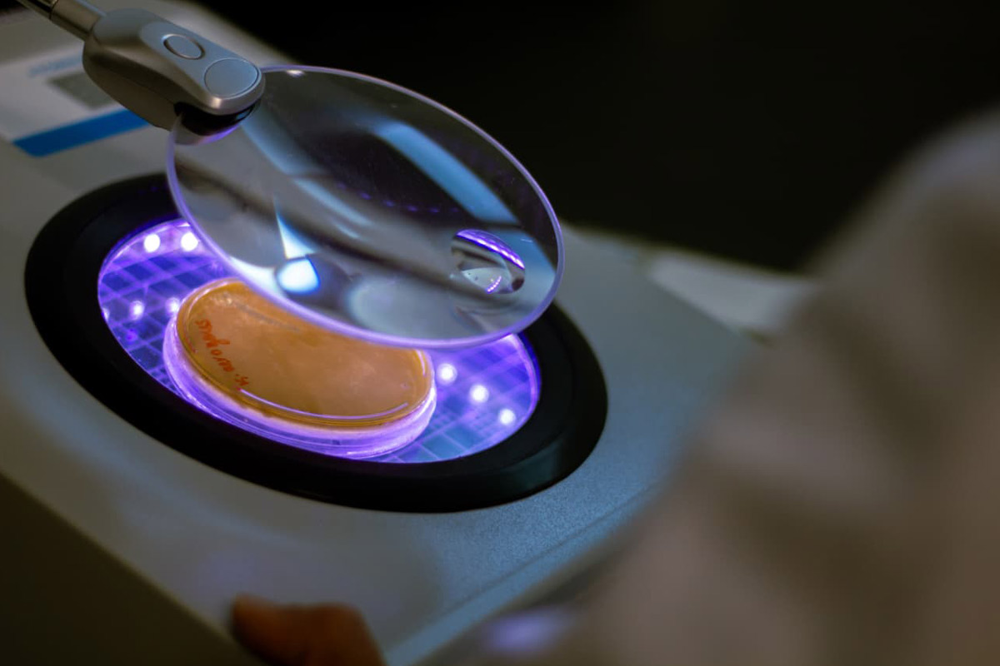

Nuestras áreas de investigación enfocadas en la salud, seguridad alimentaria y ambiental

Garantizar la inocuidad de la cadena de producción alimenticia desde el campo hasta la mesa, mediante la evaluación de los puntos críticos de control a través del diagnóstico e identificación del tipo de contaminante (físico, químico o biológico), por medio de técnicas de microbiología tradicional y molecular, favoreciendo al productor nayarita.

Los contaminantes emergentes son sustancias que no habían sido previamente clasificadas como contaminantes, y su presencia en el ambiente plantea un riesgo para la salud. Estos compuestos se caracterizan por no necesitar persistir en el entorno para generar efectos adversos. Esto se debe a que su eliminación o transformación puede ser compensada por su constante reintroducción, impulsada por su elevada tasa de producción.

Importancia de una dieta saludable en la prevención de numerosas enfermedades es un hecho claramente contrastado. Investigamos estrategias para el enriquecimiento de alimentos con ingredientes funcionales tales como fibra dietética, ácidos grasos, compuestos fenólicos, probióticos, entre otros ingredientes basados en plantas.

Enfocada en el impacto inmunotóxico de plaguicidas organofosforados, en el sistema colinérgico neuronal y no neuronal leucocitario. Se destaca la capacidad de los plaguicidas organofosforados para alterar este sistema, además de su efecto neurotóxico. Se investiga el mecanismo de inmunotoxicidad.